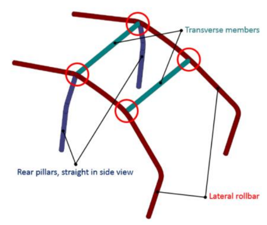
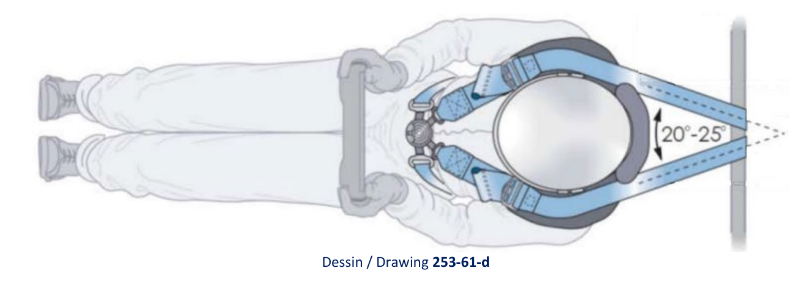
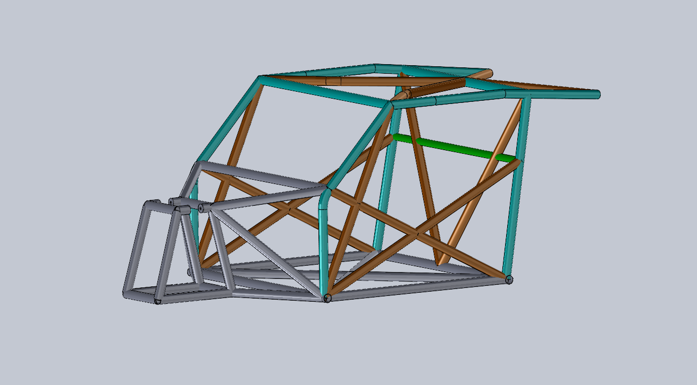
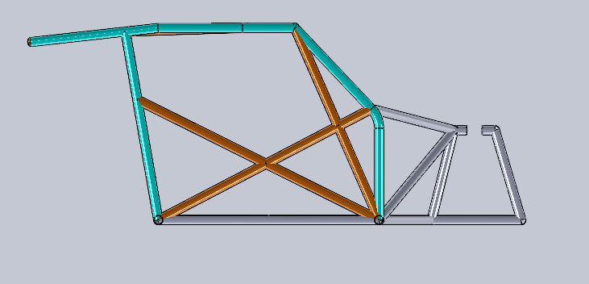
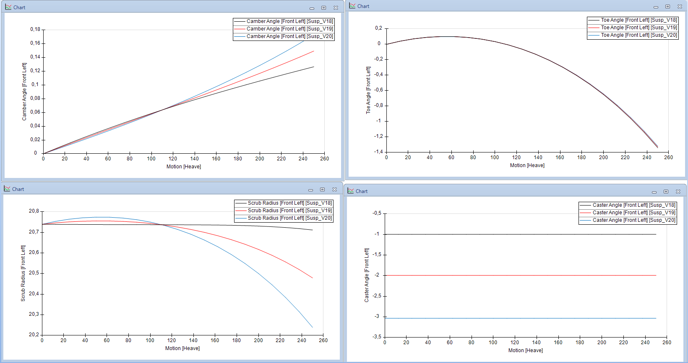
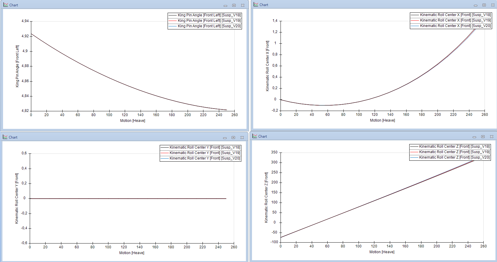

UTV Competition Vehicle Preliminary Design
Preliminary design of a competition UTV focused on vehicle packaging, front suspension kinematics, safety cage development, and CAD integration under FIA-oriented design constraints.
Overview
This project involved the preliminary development of a competition UTV concept, with emphasis on vehicle architecture, suspension definition, structural safety, and packaging integration. The work was carried out within a small engineering team, combining regulatory references, CAD development, and suspension kinematic studies to support early-stage technical decisions.
Role and Contributions
My contribution focused on the early-stage engineering definition of the vehicle, especially in areas related to safety cage development, packaging integration, and front suspension layout. A major part of the work consisted of translating FIA-inspired design requirements into feasible geometry and CAD solutions.
- Defined the preliminary layout and packaging of key mechanical and structural vehicle elements.
- Designed the main safety cage concept following FIA-oriented geometric and structural criteria.
- Worked on front suspension kinematics using OptimumKinematics to support the definition of suspension pickup points.
- Studied steering system positioning in relation to suspension geometry and front-end packaging.
- Managed and developed large CAD assemblies in SolidWorks for integrated vehicle design.
Engineering Focus
Two areas were especially valuable in this project. The first was the safety-driven structural layout, where cage geometry and restraint positioning had to remain compatible with FIA-inspired references. The second was the front suspension study, where OptimumKinematics was used to evaluate hard-point feasibility and understand how camber, toe, scrub radius, king pin angle, and roll center behavior evolved through wheel travel.
This combination of regulation, CAD development, and kinematic analysis made the project particularly useful as a real example of system-level vehicle design.
Gallery
The material below shows the progression from regulatory references to in-house CAD development and suspension kinematic evaluation.






Project Value
Beyond the technical outcome, this project was a strong learning experience in collaborative vehicle design, regulation-driven engineering, and system integration. It strengthened my understanding of how safety, structure, suspension, steering, and packaging constraints interact during the preliminary design phase of a competition vehicle.